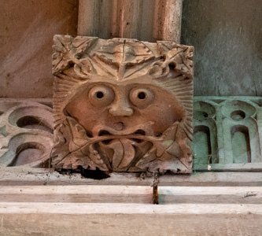
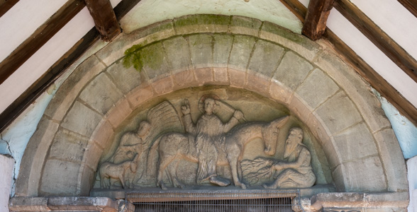

1. Iron Age Britain (800 BC to 43 AD)

The beginnings of Christianity...but not in Britain...
Iron Age Britain was characterised by polytheistic religion (i.e. belief in or worship of more than one god) with a strong connection to the natural world, those who practiced polytheistic or non-Christian religions were referred to as pagans by the early Christians (the term originally referred to people living in rural areas, as most city dwellers had converted to Christianity, it derives from the Latin word pagus, meaning "country" or "rural district", the plural of pagus is pagi).
Pagans believed in a multitude of spirits, gods and goddesses, often associated with natural elements, and practiced rituals, including sacrifices to appease these deities - they believed that the gods could influence natural disasters, invasions, and other events. Pagan sacred spaces included lakes, rivers, hills, and woods; the moon, sun, and stars were also significant.

Green Man
Although originally a pagan symbol, the Green Man was regarded by early Christians as representing the energy of life reborn in Christ and was adopted by the early Church to symbolise Easter and the Resurrection. Also, medieval legend has the Tree of Life growing from seeds planted in Adam’s mouth. Hence, the Green Man is commonly found in churches.
Green Men are found in a variety of forms in the ornamental stonework and woodwork of churches. They are male heads peering through foliage, which is often growing from their eyes, mouth, ears and nostrils. They are usually found on roof bosses, capitals, corbels and misericords.

St Edith, Eaton-under-Heywood - Green Man
St Leonard, Linley - Green Man on Tympanum
Yew Trees
Yew trees have been a feature of churchyards ever since the beginning of Christianity, as they were adopted from existing pagan sites, some still existing trees even pre-date Christianity. The trees symbolise immortality and resurrection, but they also had practical uses as they protected the land from livestock due to their poisonous nature and provided wood for bows.

All Saints, Norbury - Yew Tree
Shropshire was occupied by the Cornovii tribe of Celtic people. Their capital in pre-Roman times was probably a hillfort on the Wrekin.
The root of the Cornovii tribe's name generally means 'of the horn', signifying a peninsula, something which was relatively common with Celtic tribes which occupied peninsulas. The Midlands Cornovii clearly were not peninsula dwellers though. The origin of their name is more obscure, perhaps referring to a god, the 'Horned One', Cernunnos. The root is 'corn', meaning 'horn', just as it is for the peninsula-dwelling Cornovii. Despite the Anglo-Saxon conquest, the deity survived in legend as Herne the Hunter.
The history of Christianity begins with the Ministry of Jesus...
Jesus was a Jewish teacher and healer who was crucified and died in circa AD 30-33 in Jerusalem (in the Roman province of Judea). Afterwards, his followers (a set of apocalyptic Jews) proclaimed him risen from the dead and believed he was the prophesised Messiah, the Son of God, the Christ (a title in Greek for the Hebrew term Messiah), thus Christianity began as a Jewish sect, diverging gradually from Judaism over doctrinal, social and historical differences.
After the death of Jesus, his followers established Christian groups in cities, such as Jerusalem; the movement then quickly spread to other major cities including Alexandria, Damascus and Antioch. Early Christians referred to themselves as brethren, disciples or saints, but it was in Antioch, according to Acts 11:26, that they were first called Christians (Greek: Christianoi).
Christianity first appeared in Rome most likely in the mid-1st Century AD.

no known dedication, Aston Eyre - Tympanum showing Christ’s entry into Jerusalem, considered to be the finest in Shropshire
The Gospels
The Gospels are the first four books of the New Testament - Matthew (winged man), Mark (winged lion), Luke (winged ox), and John (eagle) - which recount the life, ministry, death, and resurrection of Jesus Christ. "Gospel" means "good news" (from the Greek euangelion), representing the central message of Christianity. They were written between 70–100 AD, focusing on Jesus as the Savior and Messiah.
The four Evangelists - Matthew, Mark, Luke, and John - are represented as winged animals (collectively called the Tetramorph) to symbolize different aspects of Jesus Christ’s life and ministry, as well as to represent the divine inspiration of their Gospels. These symbols are derived from biblical visions in Ezekiel 1 and Revelation 4, which describe four living creatures surrounding the throne of God.

St Gregory, Morville - The Gospels (17th Century Wood Carvings)